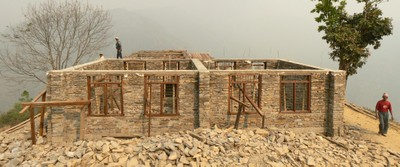

Bandas de concreto reforzado [RCB]
Hay bandas horizontales de concreto reforzado dentro del muro de mampostería. Por lo general al nivel del zócalo, dintel o techo.

Edificios de mampostería de piedra con bandas de concreto reforzado al nivel del dintel, India (S. Brzev)

Edificio de mampostería con una banda de concreto reforzado al nivel del dintel, Nepal (M. Schildkamp)